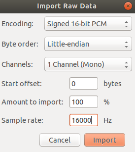
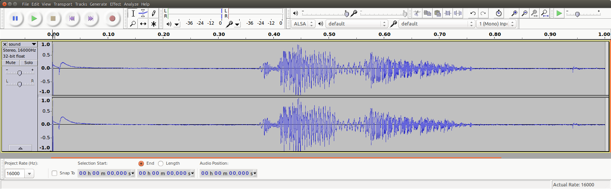

X-NUCLEO-IKS02A1 shield - MEMS microphone
概述
此示例启用 X-NUCLEO-IKS02A1 扩展板上的数字 MEMS 麦克风
此示例演示如何通过 X-NUCLEO-IKS02A1 扩展板上的数字 MEMS 麦克风采集音频。麦克风产生 PDM 流，通过 I2S 采集。然后使用 zephyrproject/modules/hal/st/audio/microphone 中提供的 OpenPDM2PCM 库将 PDM 流转换为 PCM。
要求
此示例通过 I2C 与叠插在带 Arduino 连接器的开发板上的 X-NUCLEO-IKS02A1 扩展板通信。
备注
请注意，要使扩展板在该开发板上工作，需要正确闭合 SB24 和 SB29 焊桥。这样，PDM 麦克风的时钟线和数据线会连接到 SPI 时钟和 MOSI。其他开发板可能也需要类似的处理。
参考资料
X-NUCLEO-IKS02A1: https://www.st.com/en/ecosystems/x-nucleo-iks02a1.html
构建与运行
此示例可以在 X-NUCLEO-IKS02A1 叠插在任何带有匹配 Arduino 连接器的开发板上时运行。本例中使用 Nucleo F411RE 开发板。可以使用以下命令构建示例：
west build -b nucleo_f411re samples/shields/x_nucleo_iks02a1/microphone/
备注
如果使用其他开发板，构建示例之前必须验证的一项内容是 I2S 输出时钟频率配置。例如，对于 nucleo_f411re 开发板，以下文件配置了 I2SPLL，并依赖于 HSE/HSI：boards/shields/x_nucleo_iks02a1/boards/nucleo_f411re.overlay
请用户检查所用主机开发板的 defconfig 文件中配置了哪个振荡器，并计算最终的 I2SClk 频率，例如 boards/st/nucleo_f411re/nucleo_f411re.dts
示例输出
该示例采集一秒钟的音频，并将 PCM 流打印到 COM 端口。按下复位按键后立即开始采集。
PCM 音频的参数在示例中是硬编码的：
16KHz 采样率
每个采样 16 位
1 个声道（单声道）
以单声道 16KHz 采样率采集一秒钟，会得到 16,000 个 16 位采样。麦克风 PDM 所请求的时钟应使 MP34DT05 驱动选择合适的过采样/抽取因子，从而得到约 2MHz 的位时钟。
PCM 和 PDM 配置请参阅文件 samples/shields/x_nucleo_iks02a1/microphone/src/main.c。
备注
可以将 AUDIO_FREQ 改为 32000，此时只采集 500 ms。
采集结束时，PCM 数据会以二进制或 ASCII 格式打印到终端模拟器上。输出格式由 samples/shields/x_nucleo_iks02a1/microphone/src/main.c 中的 PCM_OUTPUT_IN_ASCII 宏控制，默认关闭。
二进制 PCM 输出
Nucleo F411RE 开发板以 USB CDC 类设备的形式出现在主机上，并使用 /dev/ttyACM0 设备进行通信。必须将 /dev/ttyACM0 端口配置为原始（raw）模式，以免特殊字符（例如 CTRL-Z 或 CTRL-D）被处理和转换。
stty -F /dev/ttyACM0 115200 raw
cat /dev/ttyACM0 > /tmp/sound.raw
dos2unix -f /tmp/sound.raw
备注
dos2unix 命令用于修复字符 0x0a 被解释为 NL 并被添加一个 0x0d（CR）的情况。如果不将其去除，音频流就会损坏。
警告
/tmp/sound.raw 文件的最终大小应恰好为 32000 字节，但有时可能会在开头多出 1 或 2 个多余的 0x00 字节。这种情况下，用户可以使用以下 Linux 命令将其去除（根据要去除的多余字节数修改 skip 值）：
dd if=sound.raw of=sound_clean.raw bs=1 skip=1
ASCII PCM 输出
也可以重新编译，使 PCM 以 ASCII 格式输出，之后需要再转换为二进制。输出格式如下：
-- start
0xfbe0,
0xfbf0,
0xfc0c,
0xfc24,
0xfc3c,
0xfc4c,
0xfc68,
0xfc48,
[...]
0xfb98,
0xfb98,
0xfbb8,
0xfbac,
0xfbc4,
0xfbe8,
0xfbf4,
-- end
播放 PCM 音频
得到二进制 PCM 文件（例如 sound.raw）后，可以使用开源编辑器/播放器 audacity 等工具加载并播放它。
使用 'Import->Raw Data' 菜单，以有符号 16 位 PCM、小端（Little Endian）、单声道 @16KHz 格式加载 sound.raw 文件：


导入文件后，就可以分析并播放这段 1 秒的音频文件：


See also
- audio_dmic_interface